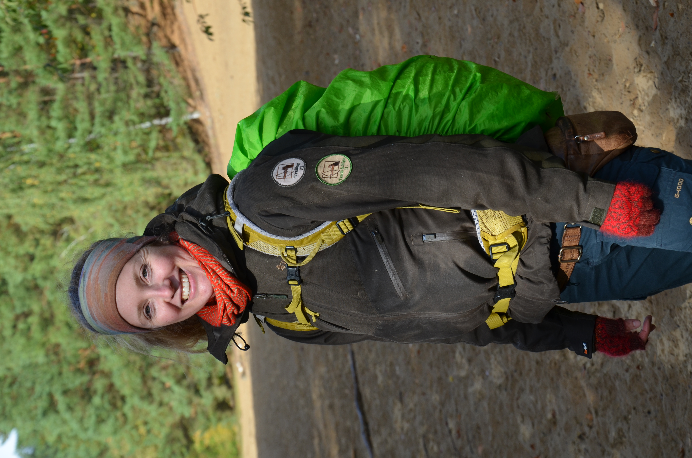

Pauline Münchhagen
Selbstständige Fährtenleserin

Die Natur ist mein Arbeits- und Lernraum. Als international geprüfte Fährtenleserin begleite ich Menschen dabei, die Spuren unserer heimischen Tierwelt zu finden, ihre Zeichen zu verstehen und eine tiefere Verbindung zur Natur aufzubauen.
Abschlüsse
Studium
- Ökologie, Evolution und Naturschutz
- Geographie
Zertifikate
Fährtenlese-Evaluierungen
- Track & Sign II
- Trailing III
WildnisSpuren
Meine Arbeit
Meine Arbeit im Bereich des Fährtenlesens ist aus einer tiefen Verbindung zur Natur und vielen praktischen Erfahrungen im Gelände gewachsen. Über die Jahre habe ich mich intensiv mit Track & Sign und Trailing beschäftigt und mein Wissen in verschiedenen Modulen und eigenen Naturaufenthalten vertieft.
Dabei standen immer das direkte Lernen in der Natur, das Beobachten von Tieren und das Verständnis der ökologischen Zusammenhänge im Mittelpunkt. Ergänzt wird mein Ansatz durch Erfahrungen in der Vermittlung von Naturwissen an unterschiedliche Zielgruppen – vom Einstieg bis hin zu vertiefenden praktischen Einheiten im Gelände.
Heute fließt all dieses Wissen in meine eigene Arbeit als Fährtenleserin ein.